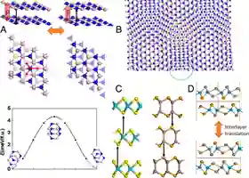
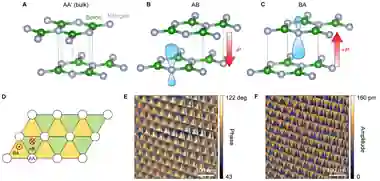
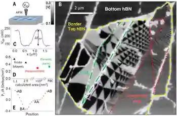
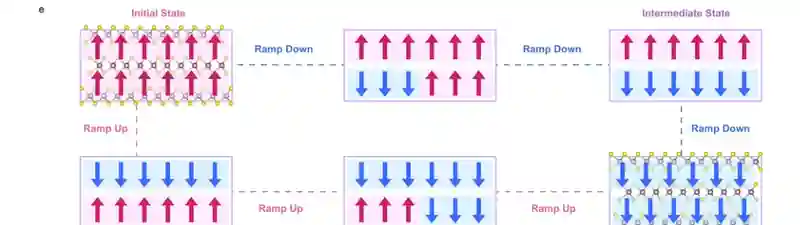

一层没变，为什么叠起来以后会有极化？
“层间滑动翻转极化”这句话太快了。第一遍真正需要抓住的是：极化不是凭空附着在某一层上，而是由两层的相对 stacking registry 产生；registry 变，界面电荷重分布和偶极方向也跟着变。
素材规则：原文以完整论述段落为单位；所有论文图先从 PDF 600 DPI 整页渲染，再裁到完整 figure / panel，并经过单图和网页两级复核。这里展示的是各公开稿的实际版式，不把正式出版版和 arXiv 版的 panel 编号混在一起。
1. “Sliding”首先是在改 registry，不是在直接搬运一个现成的 P
Wu 与 Li 2021 最适合用来建立词汇。看 BN bilayer 时，不要先盯着“能不能滑”，先问上下层哪些原子对齐、哪些原子落在六元环中心。这个相对配位打破了中心对称，并允许净层间电荷转移；于是界面本身带上面外偶极。

作者不是先给“sliding FE”的定义，而是按结构推导：两层不等价 → interlayer charge transfer → AB 配位有面外极化 → 相反极化态之间可由 lateral translation 连接。真正被切换的是 stacking-defined polar state。

化学组成没有变，只是相对横移，红色 P 箭头却反向。这说明 P 的符号和 registry 绑定，而不是“上层天生带 +P、下层天生带 −P”。
unit-cell 路径势垒很低，只说明存在低能结构通道；它并不能证明真实微米器件会整片 coherent sliding。后面为什么会转向 domain-wall motion，正是本站主线之一。
2. Yasuda 2021：先把 AB 与 BA 的结构差别和 ±P 对上
Yasuda 等人的核心贡献之一，是把一个原本 bulk 中不表现这种极化的 hBN，通过人工平行堆垛做成 polar bilayer。这里先不要急着看器件 hysteresis，先把 AA′、AB、BA 三种 registry 的对称性关系看明白。

parallel-stacked bilayer BN 的 out-of-plane polarization 会随 stacking order 反转；而这种 polarization switching 又能通过邻接 graphene 的电阻读出。前者是结构物理，后者是测量通道，不要把二者混成一句“graphene 产生了铁电”。

自然 bulk-like AA′ stacking 通过 180° 旋转关系恢复整体反演对称性，因此没有一个唯一的面外极化方向。
AB 和 BA 交换了上下层的局域注册关系，界面轨道畸变与电荷重分布也随之反向。图中的电荷云和 P 箭头就是这个最小结构图像。
这份公开 author manuscript 的 Fig. 1 结构图与正式 Science 排版不同。为了避免“截图是 A–C、讲解却按 A–F”的错配，这一节只让 Yasuda 承担结构证据；下一节用 Vizner Stern 的 KPFM 原图承担真正的空间 domain 证据。
3. Vizner Stern 2021：AB / BA 不只是两个结构模型，而是样品里真实存在的两种 domain
如果只看 AB/BA 原子图，仍然可能把它当成理论构型。Vizner Stern 同年从真实空间补了一块关键证据：KPFM 能看到大片稳定的 surface-potential contrast，这些区域与 AB / BA interfacial stacking 对应，并由很窄的 domain wall 分隔。

它把“非中心对称平行堆垛 → alternating normal-polarization domains → 相邻 domain 相差一个 lateral lattice-site shift → biased tip 可实现可逆 switching”放在一条连续因果链里。单拿其中一句会看不出作者究竟靠什么把 sliding 和 polarization 联系起来。

它们是同一 bilayer interface 的不同 stacking registry。surface-potential contrast 是实验直接测量量，AB/BA polar interpretation 还要结合结构和计算。
KPFM 直接给的是局域接触势差。作者再把 ΔV、domain geometry 与计算的 interfacial polarization 合起来，才把黑白区域解释成相反极化。因此“测量量”和“物理解释”要分开。
4. Meng 2022：多一层就多一个 interface，于是自然出现 intermediate state
bilayer 最简单：只有一个 vdW interface，最自然就是两个相反 interfacial dipole。trilayer 有两个 interface；它们可以同时朝上、同时朝下，也可以一上一下。于是总极化不必一步从最大正值跳到最大负值。

作者把 multilayer 3R-MoS₂ 的 anomalous intermediate states 与 layer number、interlayer dipole coupling 和 generalized switching model 连在一起。重点是多个 interface dipole 的组合，而不是把每个中间平台当成一种全新的材料相。

1 个 interface dipole，最简状态空间就是 ↑ / ↓。
2 个 interface dipole，↑↑、↑↓、↓↑、↓↓ 代表不同组合；净 P 因而可以有中间值。
如果有多个 interface，电场来了以后先翻哪一个？两个 interface 会不会同步？中间态为什么能停留？这就从“什么是 sliding FE”进入了真正的 switching pathway 问题。
先用前四篇建立直觉，再读 General Theory for Bilayer Stacking Ferroelectricity，用 layer symmetry / stacking operation 把“什么样的 bilayer 能出现 stacking ferroelectricity”形式化。这样群论是在解释已经看懂的物理，而不是先背判据。
5. 学完这一页，边界要很清楚
现在可以比较稳地说
特定 stacking registry 可以破坏整体反演对称性并伴随层间电荷重分布；AB / BA 可以对应相反面外极化；lateral translation 能连接相反 polar registry；多层体系因为存在多个 vdW interface，可以出现组合式 intermediate polarization states。
这一页还不能推出
真实器件中面外电场怎样启动面内 motion；switching 是整层 coherent sliding、局域 nucleation，还是已有 domain wall propagation；实验 coercive field 对应哪一个 microscopic barrier。这些要靠后面的 switching/DW/pinning 证据。
建议阅读顺序
建立 registry → charge transfer → P → translation 的机制语言。 DOI
把 AB/BA stacking 与相反 polarization 变成实验可读出的关系。 DOI
看真实空间的 AB/BA polar domains 与 lateral-shift 图像。 DOI
从 bilayer 二态进入 multilayer 多界面组合与 intermediate states。 DOI